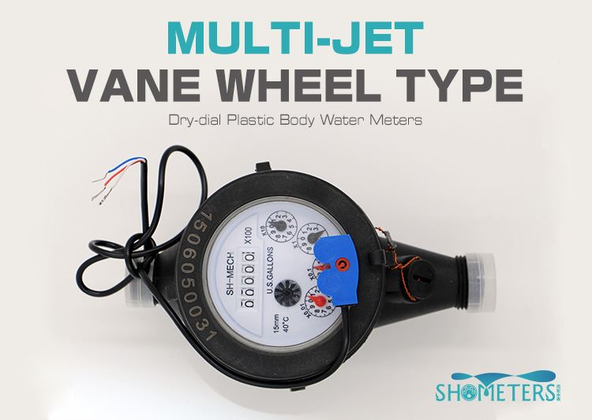

E-mail:
info@sh-meters.comCall Us:
+86 13131984716
Pulse output Multijet water meter application
Pulse output mechanism multijet water meter

APPLICATION
This type of water meter is multi-jet super dry type water meter with pulse transmitting device and used to measure the total quantity of cold potable water which consumed in household or a resident unit, passing through the pipeline.
This type of water meter is the world’s favourite domestic water meter, with over 100 million already in service in over 100 countries.
FEATURES
Multi-jet velocity meters, Easy readable rollers indicator.
Magnetic drive, dry-dial, vacuum sealed register, frost resistant, keeps clean reading for long time.
High sensitivity of measuring accuracy, the starting flow rate of the meter size DN15mm is 8 liters or less.
All the materials in contact with water, consciously selected by the known resistance to corrosion.
Internal parts injected from high quality polymers.
Stainless Steel pivot for impeller.
The impeller is the only moving parts in contact with water permitting the most reliable.
The mechanism has 5 digits and 4 pointers, 8 digits and 1 pointers for option.
Pulse output: Available 1L, 10L,100L or 1000L per pulse for optional;
External adjustment device, inlet strainer, outlet non-return valve for selecting.
CONSTRUCTION
The meter mainly consists of a body, a measuring chamber, a indicator unit, a pulse transmitting device, a retaining ring with lid. The retaining ring secures the internal parts.
COMPLIANCE WITH STANDARD
Technical data conforms to ISO 4064:2005 Standard for horizontal installation.
Threaded connections comply with BSP Standard.
WORKING CONDITIONS
Working temperature Class: T30 or T50 for cold water meter
Working Pressure Class: MAP10 or MAP16
Pressure Loss Class: P63
Upstream Disturbance Class: U5
Downstream Disturbance Class: U0
ACCESSORIES
Every water meter will complete with 2 couplings, 2 nuts, 2 coupling gaskets and 2 spud thread protectors.
MAXIMUM PERMISSIBLE ERROR
In the lower zone from Q1 inclusive up to but excluding Q2 is: Cold potable water meter ± 5%
In the upper zone from Q2 inclusive up to and including Q4 is: Cold potable water meter ± 2%
INSTALLATION REQUIREMENTS
Step-1: The meter should be installed inHORIZONTALposition with the direction of the flow as indicated by the arrow cast in the meter body with the register face upwards.
Step-2: Pipeline must be flushed before installation.
Step-3: The meter should be constantly full of water during operation.
 Cold Multi Jet Water Meter Blue Brass Body
Cold Multi Jet Water Meter Blue Brass Body Cold Type Dry Dial Horizontal Multi Jet Water Meter
Cold Type Dry Dial Horizontal Multi Jet Water Meter Brass Body Multi Jet Water Meter
Brass Body Multi Jet Water Meter Brass Multijet Water Meter
Brass Multijet Water Meter